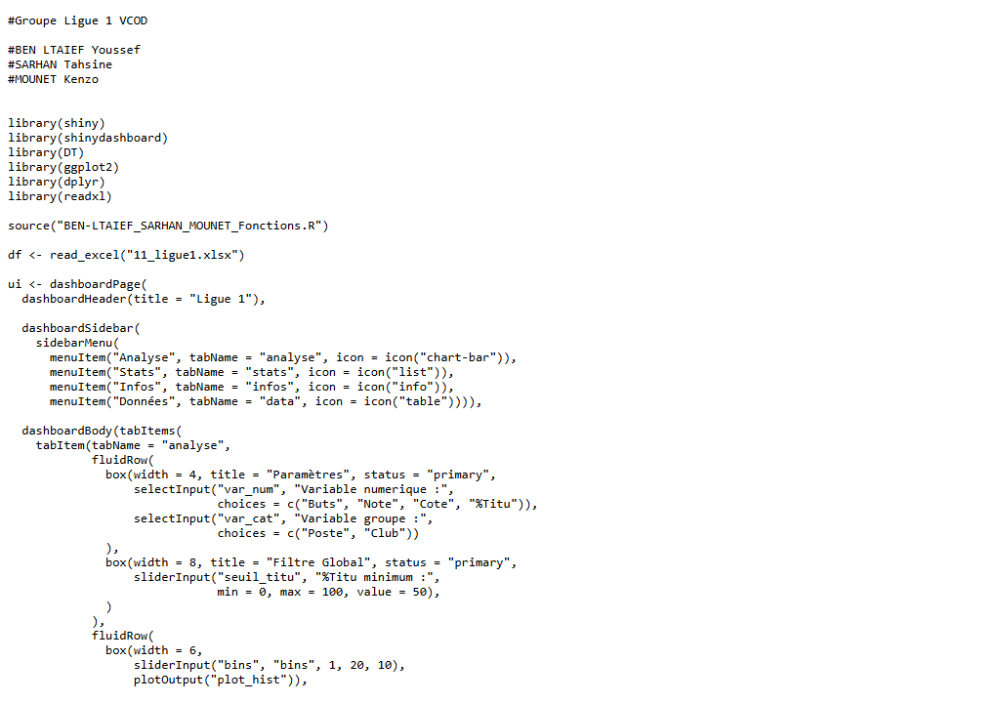
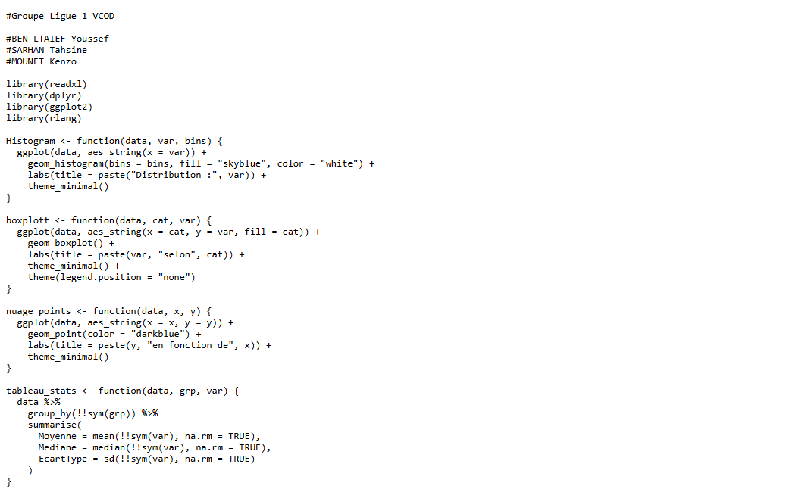

| Nom de la SAE | Application R Shiny – Analyse des données Ligue 1 | |||
| Coéquipiers : | Tahsine SARHAN | Kenzo MOUNET | ||
| Sujet spécifique | Développement d'un dashboard interactif R Shiny pour l'analyse des joueurs de Ligue 1 (statistiques individuelles : buts, note, cote, titularisations) avec filtres dynamiques et visualisations. |
| Objectifs |
Développer une application Shiny avec shinydashboard (sidebar, menu, tabItems). Créer des visualisations interactives (ggplot2) filtrables par poste, club et seuil de titularisation. Présenter des statistiques descriptives et des tableaux de données (DT). Travailler en groupe avec une architecture de code modulaire (MAIN.R + Fonctions.R). |
| Livrables | Application R Shiny (BEN-LTAIEF_SARHAN_MOUNET_MAIN.R + BEN-LTAIEF_SARHAN_MOUNET_Fonctions.R) |
| Compétence | Valoriser |
| Apprentissages critiques sollicités | AC23.01 : Mobiliser des ressources métiers liées à l'environnement |
| AC23.02 : Défendre ses choix d'analyses | |
| AC23.05 : Adapter la communication à l'interlocuteur | |
| Composantes essentielles à respecter | Application lisible et navigable : menus clairs, onglets bien nommés (Analyse, Stats, Infos, Données). |
| Visualisations adaptées aux données sportives (variables : Buts, Note, Cote, %Titu, Poste, Club). | |
| Défendre les choix de filtres et d'indicateurs lors de la présentation. |
| Compétence | Analyser |
| Apprentissages critiques sollicités | AC22.02 : Mettre en œuvre les méthodes statistiques |
| AC22.03 : Analyser et interpréter les résultats produits | |
| Composantes essentielles à respecter | Statistiques descriptives (moyenne, distribution) par groupe (poste, club). |
| Interprétation des résultats dans le contexte du football (Ligue 1). |
| Savoirs / connaissances | Savoir-faire | Savoir-être |
|---|---|---|
|
Architecture shinydashboard (dashboardPage, dashboardSidebar, dashboardBody). Composants Shiny : selectInput, sliderInput, box, tabItem. Manipulation de données R : dplyr (filter, mutate, summarise). Lecture de fichiers Excel (readxl). |
Concevoir une interface Shiny avec sidebar menu et plusieurs onglets. Créer des graphiques ggplot2 réactifs (histogrammes, boxplots, barres). Implémenter des filtres interactifs (sliderInput, selectInput). Séparer le code en MAIN.R et Fonctions.R pour la modularité. Afficher des tables interactives avec le package DT. |
Travail en équipe : répartition des modules, relecture croisée. Esprit de synthèse (ne pas surcharger l'interface). Capacité à présenter et défendre le dashboard à l'oral. Rigueur dans le nommage et l'organisation des fichiers. |
Ce que je trouve bien réalisé, pourquoi ?
La structure de l'application est claire et bien organisée : le découpage en MAIN.R (interface + server) et Fonctions.R (fonctions réutilisables) rend le code lisible et maintenable. Les filtres (sliderInput pour %Titu, selectInput pour poste/club) sont pertinents et permettent une exploration efficace des données Ligue 1.
Ce que je n'ai pas bien compris ; ce qui serait à améliorer pour une prochaine fois : pourquoi ? comment ?
La synchronisation entre les filtres globaux et les différents onglets n'était pas toujours cohérente (un filtre posé dans un onglet ne s'appliquait pas à un autre). Pour une prochaine fois : utiliser des reactiveValues partagées entre modules ; tester l'application avec plusieurs utilisateurs simulés pour détecter les incohérences.

